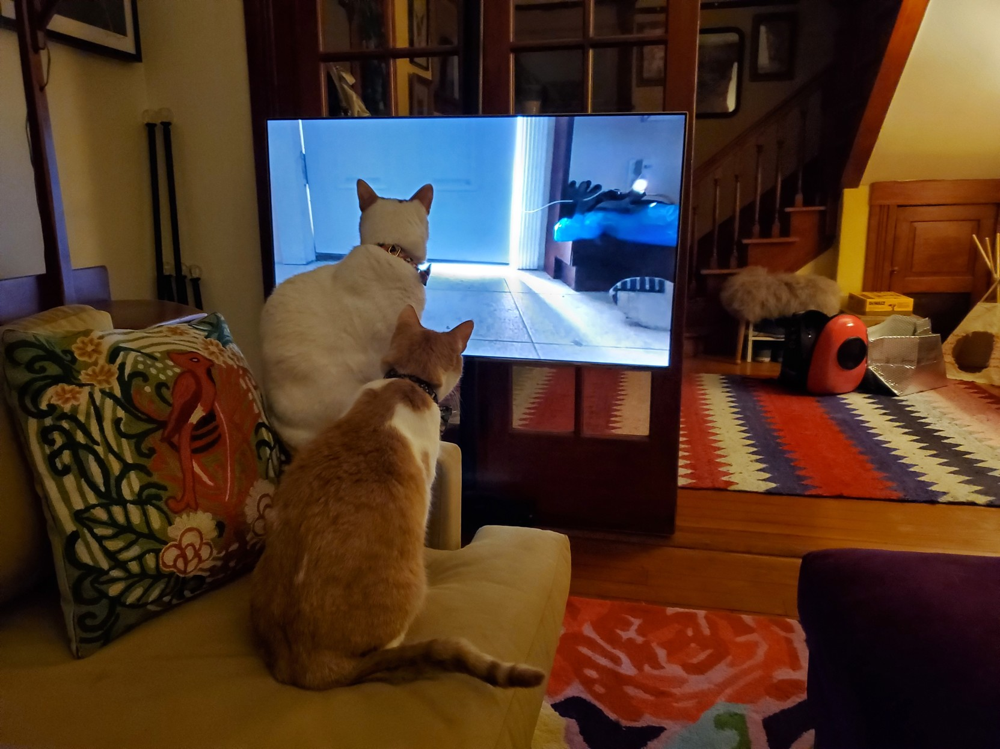
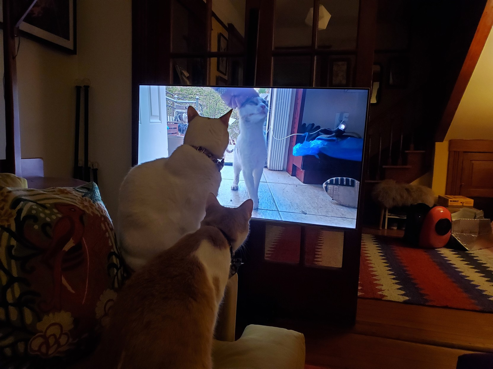
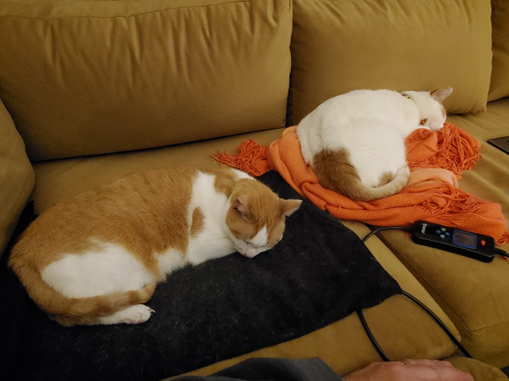

Menu
Grid layout
Relative time
🌞 Light theme
🌚 Dark theme
2022-03-07T06:20:16Z
#
Les Orchard
@
https://hackers.town/@lmorchard
So i was watching a youtube about a cat rescue when the boys got on the case


2022-03-07T06:49:20Z
#
Les Orchard
@
https://hackers.town/@lmorchard
Case closed

2022/03/09